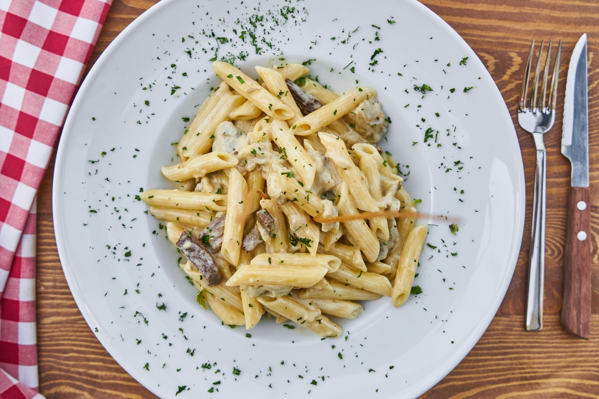
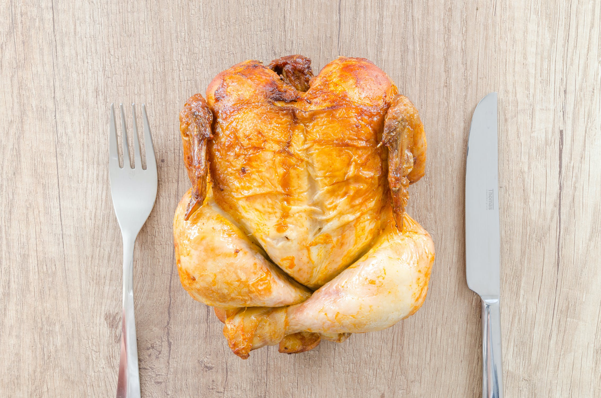
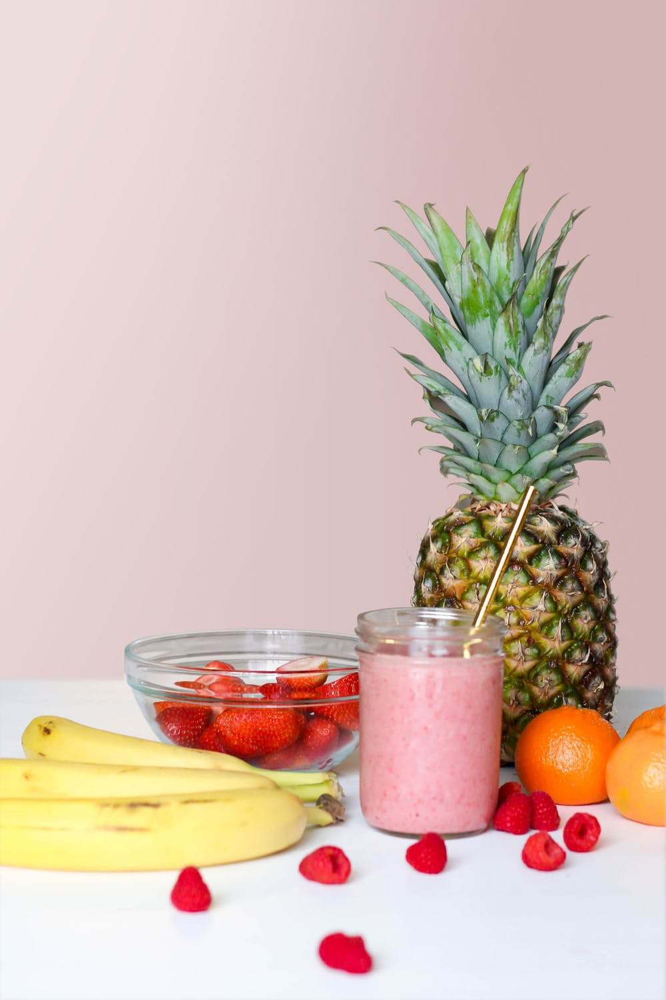

Head Over Meals
Welcome to my page! Here I will share some of my favorite recipes - Enjoy!

Ya Hungry?
Click below to view my virtual cookbook!

Seafood Alfredo
Ingredients
- 3/4 lb of Shrimp
- 3/4 lb of Scallops
- 1 package of Linguine
- Tony Chachere's to taste
- 1 jar of Alfredo sauce
Chicken Dinners
Enjoy some of my favorite chicken dinner recipes! Whether you are feeding a family of 5 or just wanting to cook a nice meal for that someone special, there is a recipe here for you!

Tropical Smoothie
Ingredients
- Frozen Mango
- Frozen Strawberries
- Banana
- Spinach
- Pineapple Juice
- Chia Seeds
- Honey
- Shaved Coconut
- Ground Cinnamon
Desserts

& who doesn't love dessert following a delicious meal? No one I know! Find some delicious dessert recipes here!

Green Bean Ravioli
Ingredients
- 1 20 oz package of cheese filled ravioli
- 1 8 oz package of fresh green beans
- 1/2 cup of chopped pecans
- 1/2 cup of butter
- 2 garlic cloves, thinly sliced
- 1 tablespoon of chopped fresh sage
- 1/2 cup of shredded parmesan cheese
Steps
- Cook ravioli and green beans in boiling water and cover in a Dutch oven 4-5 minutes or until the green beans are crisp-tender. Then drain.
- Heat pecans in a large non-stick skillet over medium heat for 2-3 minutes or until toasted and fragranted. Stir often. Remove from skillet when done.
- Melt butter in skillet over medium heat.
- Add garlic and saute fo 5-7 minutes or until garlic is caramel color and butter begins to brown. Remove from heat.
- Stir in sage, ravioli, green beans, and pecans.
- Sprinkle with cheese.